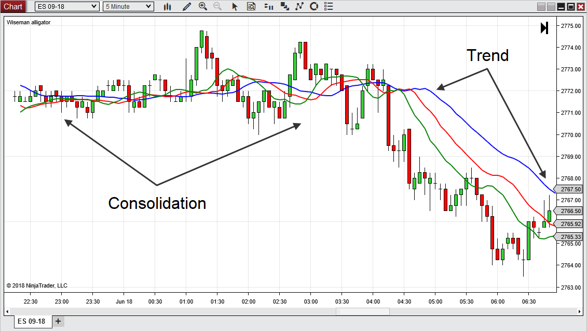
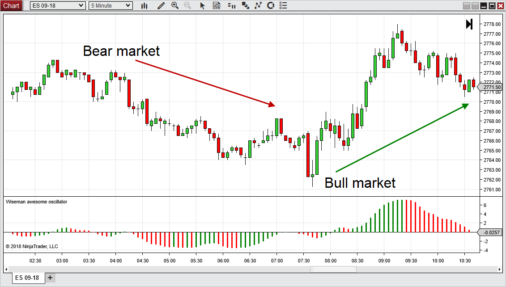
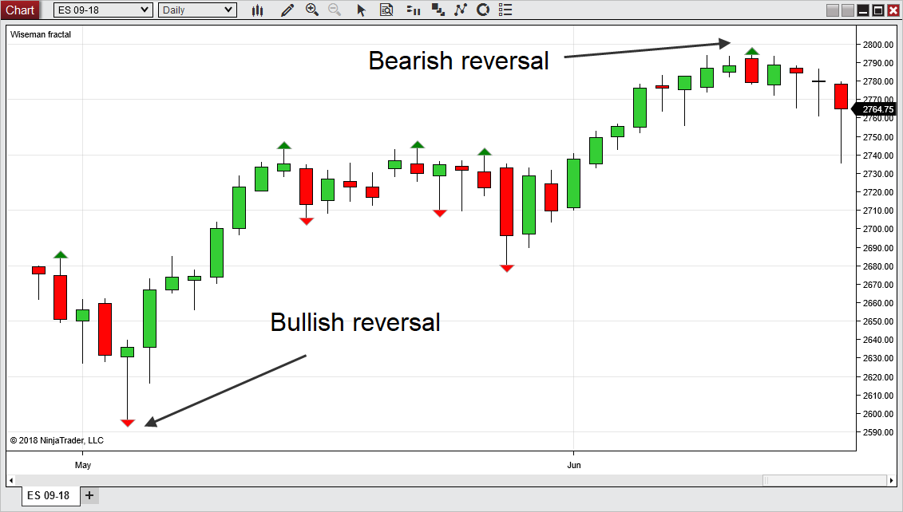

|
<< Click to Display Table of Contents >> Wiseman |


|
Wiseman
|
<< Click to Display Table of Contents >> Wiseman |
|
The Wiseman indicators group are provided by Profitunity and were developed by Bill M. Williams. Profitunity is an educational partner and offers courses on using the Wiseman indicators on their website www.profitunity.com
DescriptionThe Wiseman Alligator is an indicator that consists of 3 moving averages with offsets applied to identify trend absence, formation, and direction.
Display and using the Wiseman AlligatorWith the default values the blue line is the jaw, the red line is the teeth, and the green line is the lips. As these lines are intertwined, the alligator is sleeping and the market is consolidating. As they spread apart and continue to move in the same direction, a strong trend is indicated in the market.

Wiseman Alligator Properties
|
DescriptionThe Wiseman Awesome Oscillator is a momentum indicator to identify trends and reversals.
Display and using the Wiseman Awesome OscillatorAs the oscillator is below zero the market is considered a bear market. As the oscillator is above the zero it is a bull market. The oscillator is colored green when the value is greater than the previous bar and it is colored red when the value is less than the previous bar.

Wiseman Awesome Oscillator Properties
|
DescriptionThe Wiseman Fractal identifies areas of reversals. This is signaled by highs surrounded by bars with lower highs or lows surrounded by bars with higher lows.
Display and using the Wiseman FractalA green arrow is formed when there is a high surrounded by lower highs per the Strength input. A red arrow is formed when there is a low surrounded by higher lows per the Strength input.

Wiseman Fractal Properties
|